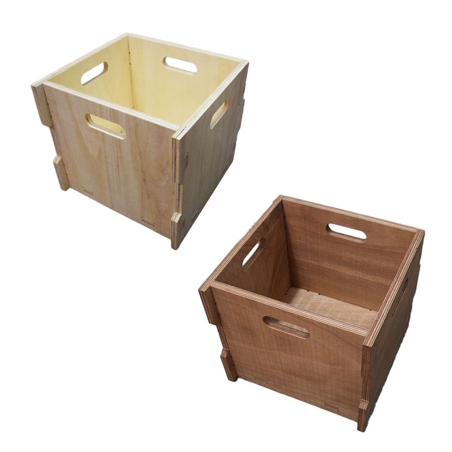
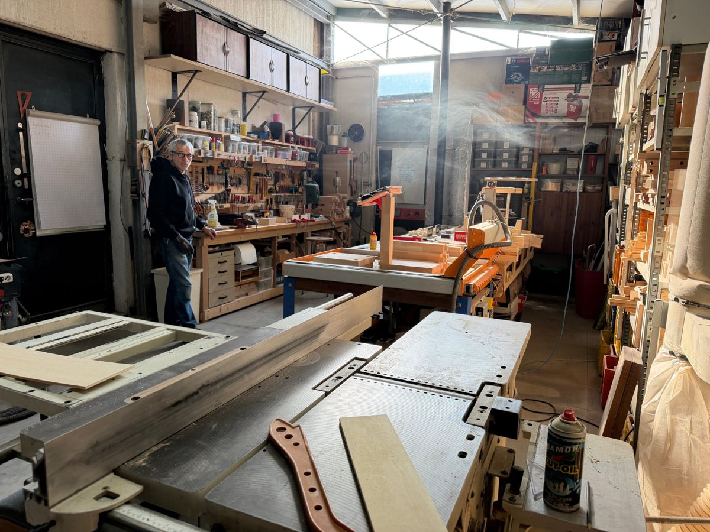

The right wood beneath every note.
Handmade furniture for speakers, turntables, amplifiers, streamers and records.
One-off pieces, designed for listening.
Every piece is born in my workshop, from the solid wood to the finish. The dimensions adapt to your equipment, not the other way round.

Extrasound Vinyl hi-fi rack
The turntable on top, the amplifier in the middle, up to 90 records below. In solid Beech or American walnut.
See the Vinyl
Wood Brick speaker stands
Blocks of Poplar plywood and Italian walnut, separated by washers that stop vibrations. Left natural.
See the Wood Brick
Extrasound Wave acoustic panels
Three panels made of strips of different woods, with a sound wave in relief. They diffuse sound and furnish the listening room.
See the Wave
Extrasound Cube
The modular wooden unit for your records. Use it on its own or combine it with other modules, in Poplar or Doussié.
See the Cube
Extrasound Tree speaker stands
In solid Beech, shaped like a tree: a stepped base, a slender trunk and a top plate that opens out in steps.
See the Tree
Wooden DAP stand
A small desktop stand that holds your portable digital player upright and tilted: display and controls always within reach, cables tidy.
See the DAP stand
Stile Pannello speaker stands
In solid Beech, with protruding slats like an acoustic panel: they correct the sound on two sides.
See the Stile Pannello
Extrasound Rigatini speaker stands
Stands for bookshelf speakers made of strips of different woods set side by side, with a stainless steel tube for stability.
See Rigatini
Extrasound Bridge cable lifters
Small solid Beech blocks with a notch on top, to keep your system's cables raised off the floor and the furniture.
See Bridge
Extrasound Stylus speaker stands
A pair of stands for bookshelf speakers in solid Doussié: 4 cm thick base and top plate, slender columns, 61 cm high.
See Stylus
Art Triangle speaker stands
Solid beech stands with the column opened up by triangular cuts: a sculpture that holds up the speaker.
See Art Triangle
Tilting speaker supports
A pair of wooden supports that tilt bookshelf speakers towards the listener.
See the tilting supports
Modern Art Grey Buttons speaker stands
Frame speaker stands made of solid beech slats fixed with grey buttons: light to look at, solid in use.
See Modern Art Grey Buttons
Listelli Rado speaker stands
A column of solid beech slats set apart: the stand is light, 6.7 kg, and lets the light through.
See Listelli Rado
Extrasound Ground speaker stands
Low stands, 24 cm high, to lift larger speakers off the floor: poplar plywood side panels and steel crossbars.
See GroundFrom your system to the finished piece.
The work starts with a conversation about the equipment you have and where you want to put it. Then everything is made here, in my workshop in Cesena.

Listening and measuring
You tell me about your system and your space. Together we define dimensions, shelves and cable routing.
Choosing the wood
I suggest woods and finishes that suit your room and the weight of your components.
Built by hand
Cutting, jointing and finishing in my workshop. I keep you updated with photos as the work goes on.
Got a system to sort out?
Write to me with the dimensions of your equipment and I'll reply with a proposal.
info@fabrizioberlati.com